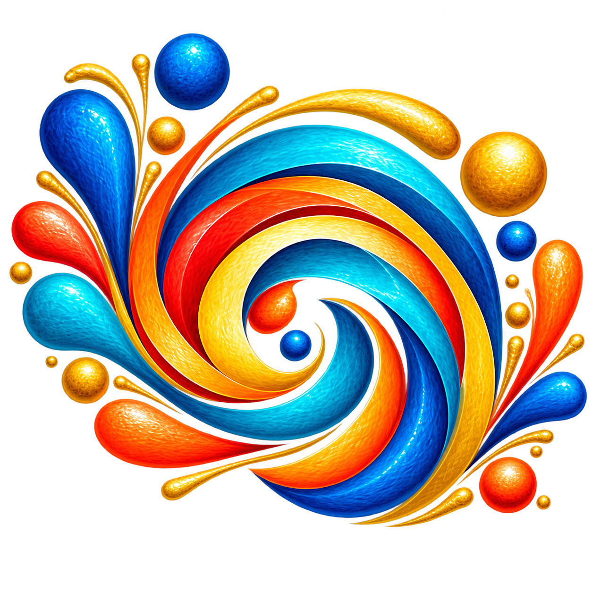

Ten interconnected themes, organised into three groups. Explore the ones that matter to you right now, and come back to the rest whenever you're ready.
Set the tone for everything else. Self, Narrative, and Meaning & Purpose.
The practical realities we're working within. Environment, Health, and Finance.
The visible structure of daily life. Activities & Interests, Relationships, Community, and Planning.
Self, Narrative, and Meaning & Purpose are about who we are, the story we tell about our life, and what gives our days direction. When the Conductors are steady, everything else tends to follow.
We are who we are beneath the roles. Strip away the job titles, the parenting years, the things others expect of us, and who's left? Over 60, many of us find that the roles we've carried for decades are shifting. This theme is about reconnecting with the person underneath, and remembering that we are still becoming.
A shift worth noticing: we realise we're so busy being what others need us to be, that we've lost touch with who we actually are, and that reconnecting matters more now than ever.
It's the stories we tell about life, not only our own, but also the assumptions we've absorbed about what life after 60 is supposed to look like. Are we telling ourselves "I'm too old to try that" or "I'm finally free to explore"? The narrative we've been running on autopilot might not even be true anymore.
A shift worth noticing: small shifts in how we talk about our lives, from "I can't" to "I haven't yet," from "I'm past my prime" to "I'm in a different season," can change what feels possible.
Purpose isn't a grand calling. It's what makes us want to get up in the morning: the conversation that matters, the project that engages us, the contribution that feels worthwhile.
A shift worth noticing: what used to give our lives meaning, raising children, building a career, may have shifted. That's not a loss. It's an invitation to design what matters now.
Environment, Health, and Finance are the essentials that support and sustain everything else: where and how we live, our physical and mental capacity, and the resources we have available.
Environment is where and how we live, but it's not limited to our own four walls. It includes the borrowed spaces we spend time in too: the local park, the coffee shop we return to, the place we go on holiday. These spaces shape our mood, our energy, and our capacity to do what matters to us, just as much as our own home does.
A shift worth noticing: a small change, moving a chair to face the window, fixing something we've been putting off, or finding a new café that feels like ours, can shift how a whole day feels.
Health is the foundation that sets our capacity for everything else. It isn't about perfection. It's about what keeps us steady enough to live the life we want.
A shift worth noticing: we don't need to overhaul everything. One small health habit, a ten-minute walk, better sleep, one honest conversation about a health concern, often creates ripples that affect everything.
Money is the foundation that enables choice: the choice to say no to something that drains us, to invest in something that matters, to feel secure.
A shift worth noticing: financial clarity isn't about being rich. It's about knowing where we stand, so our choices can be intentional rather than shaped by the anxiety of not knowing.
Activities & Interests, Relationships, Community, and Planning are what we do, who we do it with, where we belong, and how we organise our time and look ahead.
Taking on a real project or role that stretches us. Whether that's learning something demanding, mentoring others, leading a community initiative, or creating something (writing, photography, restoration work, local history), these are the activities and roles that connect us to people who care about the same things, give structure to our weeks, and let us contribute meaningfully.
A shift worth noticing: a project or role that genuinely engages us and connects us to community isn't just an activity. It's the thread that uses our skills, keeps us growing, and gives our weeks real meaning and purpose.
Relationships shift as we age. Some deepen, some fade, some need honest conversations. It's the quality of our relationships, not the number, that sustains us.
A shift worth noticing: we might realise that one relationship that feels draining is taking energy away from the relationships that lift us. Sometimes protecting our wellbeing means being clearer about which relationships we make room for.
Community is bigger than our close friends. It's the groups, places, and causes where we feel welcomed, valued, and able to contribute. It's where we experience our sense of belonging.
A shift worth noticing: we might think we're "not a joiner," but community could be a weekly café, a volunteer role, a local group around something we care about, and the sense of belonging it offers affects everything else.
Planning isn't just logistics. It's about having things to look forward to, and keeping our life intentional rather than reactive.
A shift worth noticing: when we plan a holiday months ahead, or put a standing coffee date with a friend in the diary, we give ourselves something to look forward to. Life feels different when there's always something ahead of us, rather than waiting to see what happens.
When these themes are in balance, life feels manageable and meaningful. They're deeply interconnected, so strengthening one often helps the others adjust naturally. Taking on a real project, learning something demanding, or stepping into a leadership role can expand our community, which deepens our relationships, which in turn strengthens our sense of meaning and purpose.
When one or more themes need attention, though, everything becomes harder. That's where the workbooks come in: they help you identify which themes need a gentle tune-up, and take small, steady steps to keep your life working well.